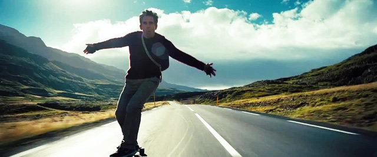
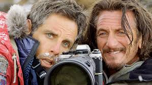

Walter Mitty's Courage to Face the World

Working

Skateboarding

Hiking

Destination
When both he and a colleague are about to lose their job, Walter takes action by embarking on an adventure more extraordinary than anything he ever imagined.
Working
Skateboarding
Hiking
Destination
Directed, starring and produced by Ben Stiller, starring as Walter Mitty
It helps create inspiration and encouragement in life, making us realize that the world is not as small as we think. Just travel out of the familiar places and you will find a new world.